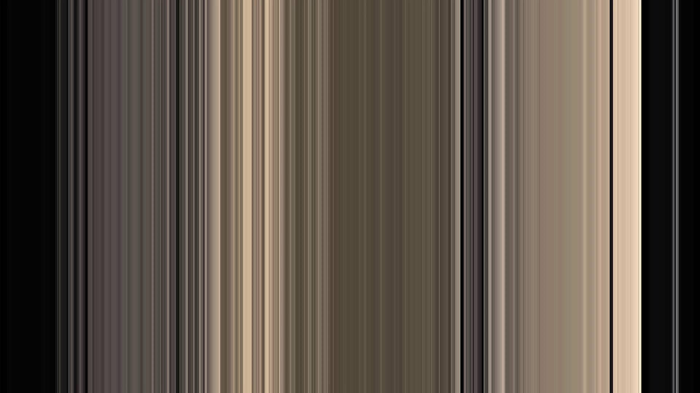
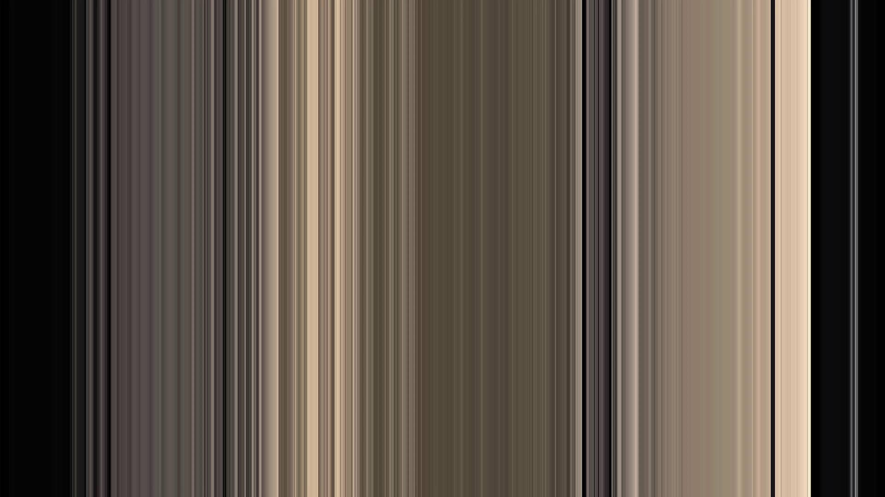
 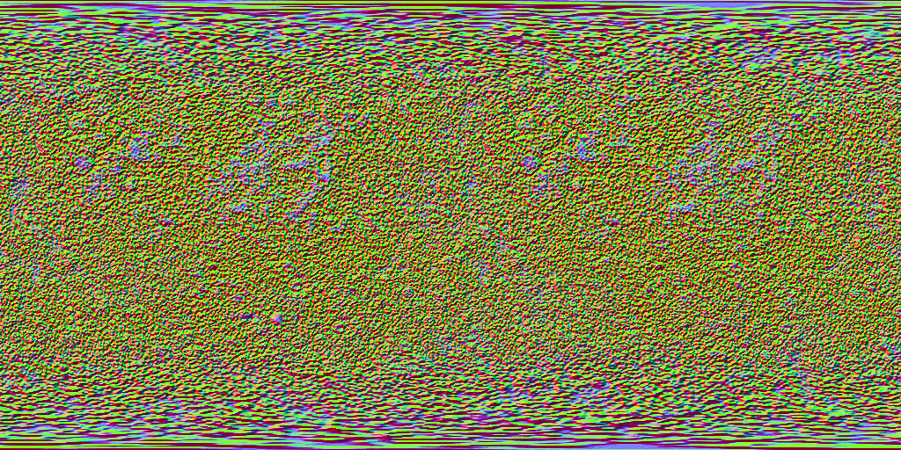
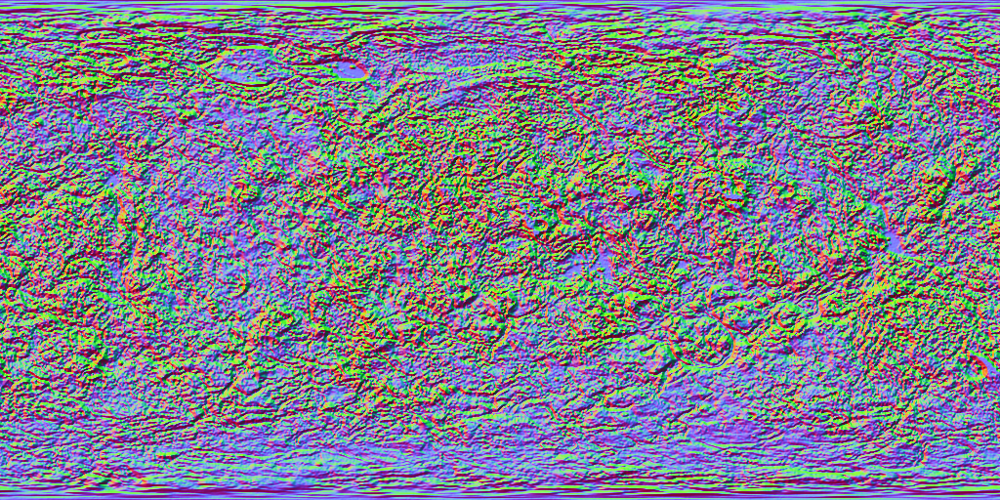
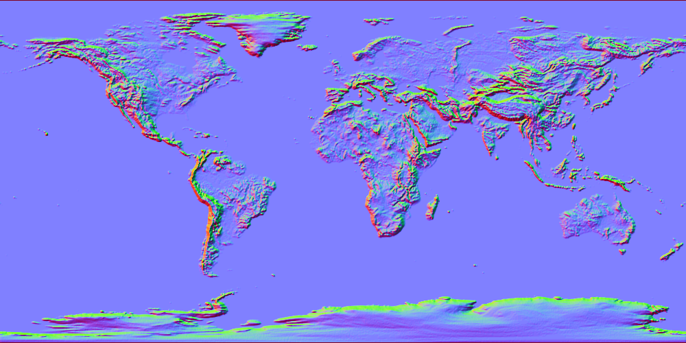
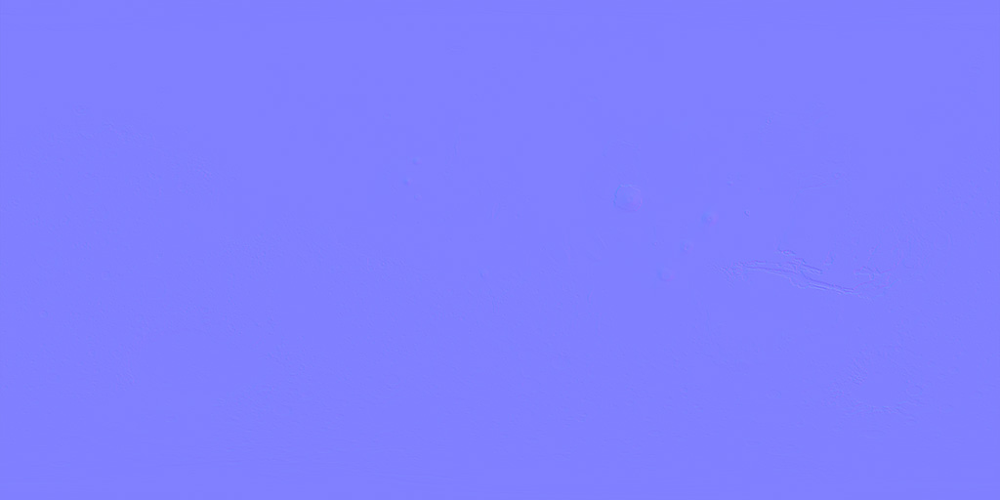
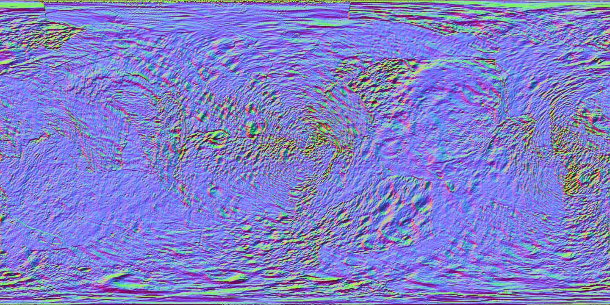
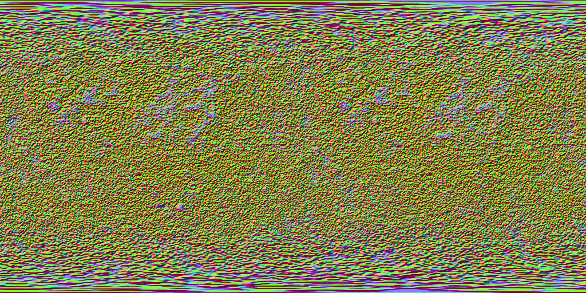
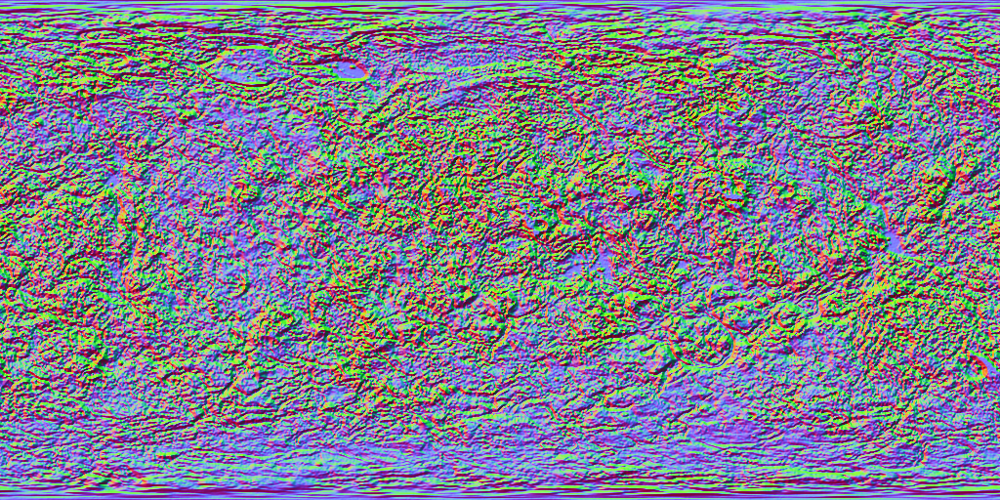
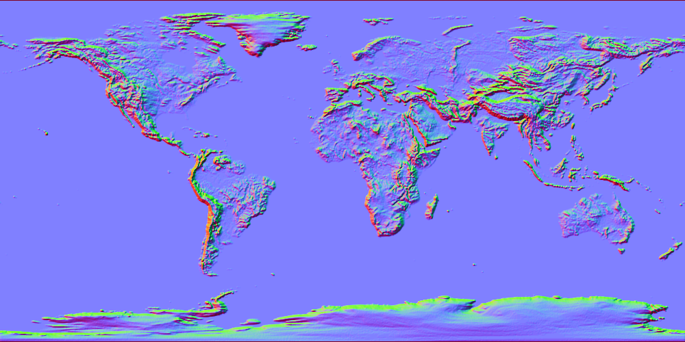
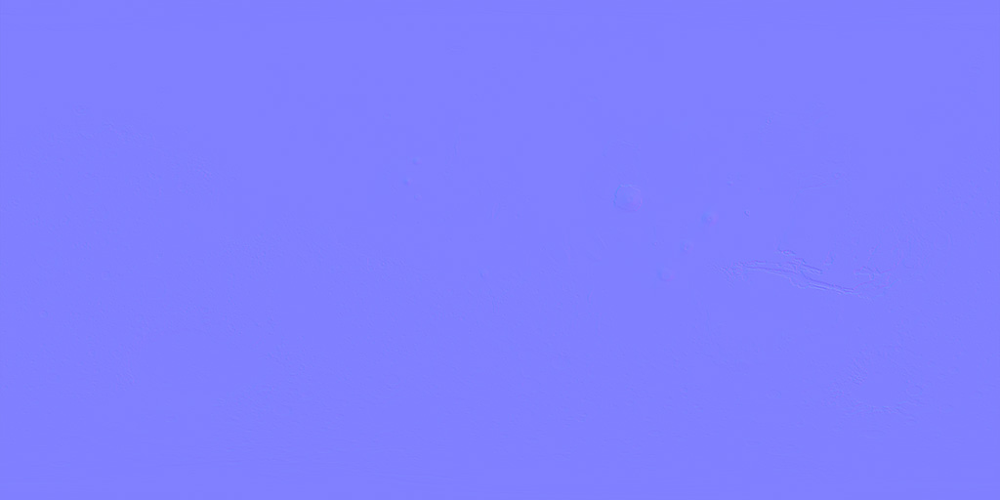
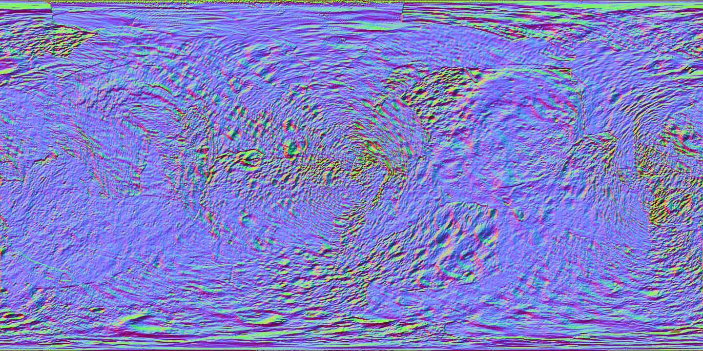

 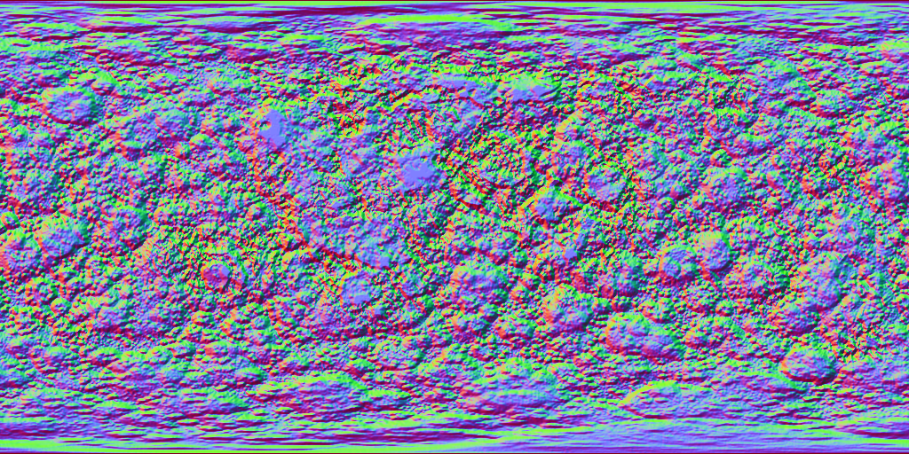
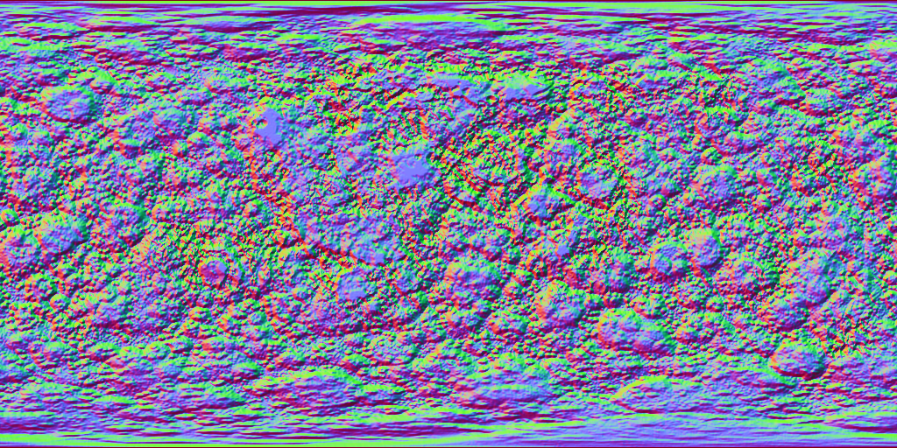
 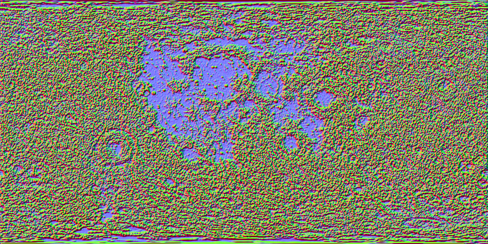
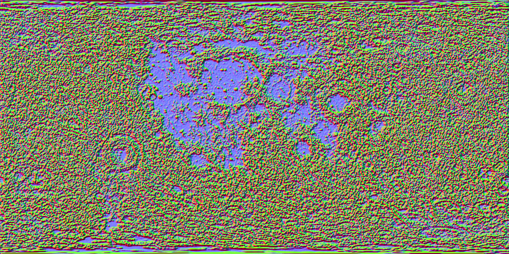
Toggle Rotation with 'R' | For trackball you must stop Rotation | Use Left & Right arrows to rotate camera when in trackball mode
Toggle Mouse movement with click | 1-9 changes speed to 1-9 | Up/Down Arrows increase/decrease speed by 0.05